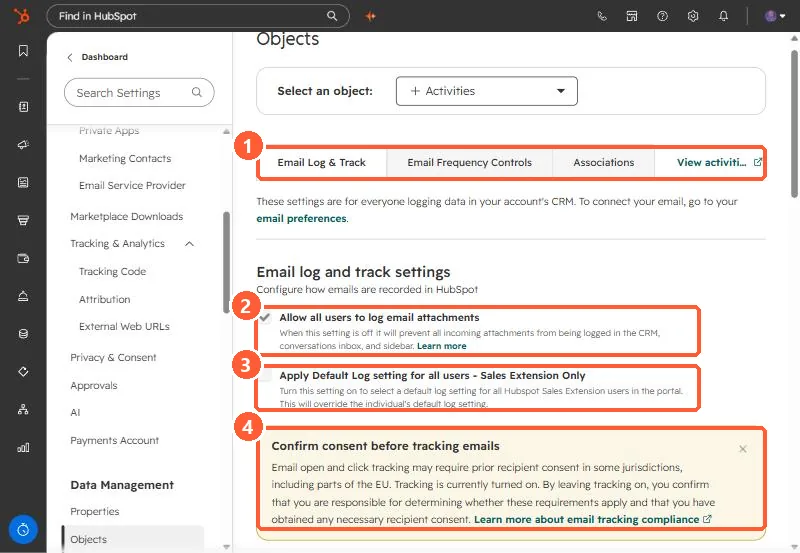

Short answer
Go to Settings, Objects, Activities, Email Log & Track. It controls whether attachments are logged, whether a default log setting and a default track setting are forced for Sales extension users, and whether users can track opens and clicks at all. The page says these settings are for everyone logging data in the account. A consent note repeats that tracking may need prior recipient consent in some jurisdictions.
1. The Email Log & Track tab
Open Activities settings. Other tabs are Email Frequency Controls and Associations.


2. The settings
- Allow all users to log email attachments. Off prevents incoming attachments being logged in the CRM, inbox, and sidebar. On in my demo.
- Apply Default Log setting for all users (Sales extension only). Overrides each user's own default.
- Allow all users to track emails. Off prevents tracking from the CRM, inbox, extensions, and sequences.
- Apply Default Track setting for all users (Sales extension only).
3. The rest of the page
The same tab holds logging rules, unsubscribe links, the never log list, and the BCC and forwarding addresses. See logging rules, the never log list, and BCC logging.